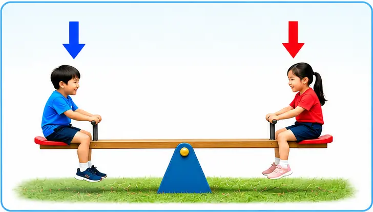
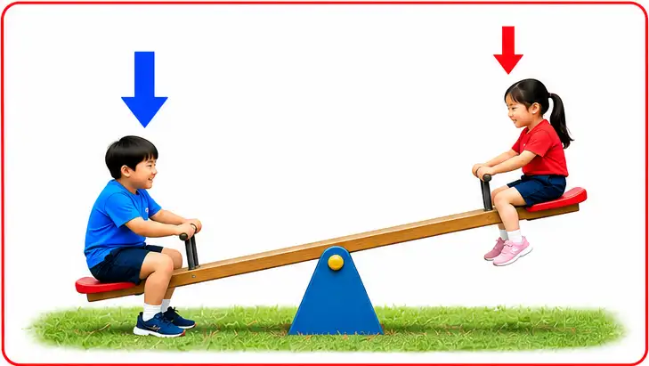

ဟန်ချက်ညီအားများနှင့် ဟန်ချက်မညီအားများ
(Balanced and Unbalanced Forces)
ဟန်ချက်ညီအားများ
အရာဝတ္ထုတစ်ခုပေါ်သို့ ပြင်ပမှအားများ သက်ရောက်နေသော်လည်း ယင်းအရာဝတ္ထု၏ မူလအခြေအနေ ပြောင်းလဲသွားခြင်း မရှိခဲ့လျှင် ဟန်ချက်ညီအားများ ဖြစ်သည်။ (ထိုအခြေအနေတွင် အသားတင်အားမှာ သုညဖြစ်သည်။)
ဟန်ချက်မညီအားများ
ရပ်နေသောအရာဝတ္ထုတစ်ခုပေါ်သို့ ဦးတည်ဘက်ဆန့်ကျင်နေသော အား ၂ ခု တစ်ပြိုင်နက်တည်း သက်ရောက်ခြင်းကြောင့် ဝတ္ထုရွေ့လျားစေခဲ့လျှင် ဟန်ချက်မညီအားများ ဖြစ်သည်။ (ထိုအခြေအနေတွင် အသားတင်အားမှာ သုညနှင့် မညီပါ။)
ဟန်ချက်ညီအားများနှင့် ဟန်ချက်မညီအားများ (Balanced and Unbalanced Forces) သင်ခန်းစာတွင် ဖော်ပြထားသော လက်တွေ့လုပ်ဆောင်ချက်များနှင့် ဥပမာများနှင့် လေ့လာနိုင်ပါသည်။
ဟန်ချက်ညီအားများ (Balanced Forces)
- လုပ်ဆောင်ချက် — လွန်ဆွဲပွဲတွင် နှစ်ဖက်အသင်းက အားတူညီစွာ ဆန့်ကျင်ဘက်သို့ ဆွဲကြသည်။
- တွေ့ရှိချက် — နှစ်ဖက်၏ အားများ တူညီနေသောကြောင့် လွန်ကြိုးသည် မရွေ့လျားဘဲ ရှိနေနိုင်သည်။
- ရှင်းလင်းချက် — အရာဝတ္ထုတစ်ခုပေါ် သက်ရောက်သော စုစုပေါင်းအား သုညဖြစ်လျှင် ဟန်ချက်ညီအားများ ဖြစ်သည်။ အရာဝတ္ထုသည် ငြိမ်နေနိုင်သကဲ့သို့ အမြန်နှုန်းမပြောင်းဘဲ ဆက်လက်ရွေ့လျားနေနိုင်သည်။
ဥပမာ
- ဘယ်ဘက်အသင်းက 100 N၊ ညာဘက်အသင်းက 100 N ဆွဲလျှင်
- Fnet = 100 - 100 = 0 N
- စုစုပေါင်းအား Fnet = 0 ဖြစ်ရင် အရှိန်ပြောင်းလဲနှုန်း သုညဖြစ်ပါတယ်။
ဟန်ချက်မညီအားများ (Unbalanced Forces)
- လုပ်ဆောင်ချက် — လွန်ဆွဲပွဲတွင် တစ်ဖက်အသင်းက အခြားတစ်ဖက်ထက် ပိုမိုအားကောင်းစွာ ဆွဲကြသည်။
- တွေ့ရှိချက် — စုစုပေါင်းအား သုညမဖြစ်သောကြောင့် လွန်ကြိုးသည် အင်အားပိုများသောဘက်သို့ ရွေ့လျားနိုင်သည်။
- ရှင်းလင်းချက် — အရာဝတ္ထုတစ်ခုပေါ် သက်ရောက်သော စုစုပေါင်းအား သုညမဟုတ်လျှင် ဟန်ချက်မညီအားများ ဖြစ်သည်။ ထိုအားကြောင့် အရာဝတ္ထု၏ အမြန်နှုန်း သို့မဟုတ် ရွေ့လျားမှုဦးတည်ချက် ပြောင်းလဲနိုင်သည်။
ဥပမာ
- ဘယ်ဘက်အသင်းက 150 N၊ ညာဘက်အသင်းက 100 N ဆွဲလျှင်
- Fnet = 150 - 100 = 50 N
- စုစုပေါင်းအားသည် ဘယ်ဘက်သို့ 50N ဖြစ်သည်။ ထို့ကြောင့် ဘယ်ဘက်သို့ ရွေ့လျားသွားပါသည်။

ဟန်ချက်ညီအားများ (Balanced Forces)
- လုပ်ဆောင်ချက် — Seesaw ပေါ်တွင် ကလေးနှစ်ယောက်သည် အလေးချိန်တူညီပြီး အလယ်တိုင်မှ အကွာအဝေးတူညီသောနေရာတွင် ထိုင်ကြသည်။
- တွေ့ရှိချက် — Seesaw သည် မြေပြင်နှင့် အပြိုင် အလျားလိုက်အနေအထားတွင် ရှိနေသည်။
- ရှင်းလင်းချက် — Seesaw ၏ ဘယ်ဘက်နှင့် ညာဘက်တွင် သက်ရောက်သော လှည့်အားများ တူညီနေသောကြောင့် ဟန်ချက်ညီနေသည်။ ထို့ကြောင့် Seesaw ၏ အနေအထား မပြောင်းလဲပါ။

ဟန်ချက်မညီအားများ (Unbalanced Forces)
- လုပ်ဆောင်ချက် — Seesaw ပေါ်တွင် အလေးချိန်မတူညီသော ကလေးနှစ်ယောက် ထိုင်ကြသည်။
- တွေ့ရှိချက် — အလေးချိန်ပိုများသော ကလေးထိုင်သည့်ဘက်သည် အောက်သို့ ကျသွားပြီး အခြားတစ်ဘက်သည် အပေါ်သို့ မြင့်တက်လာသည်။
- ရှင်းလင်းချက် — Seesaw ၏ ဘယ်ဘက်နှင့် ညာဘက်တွင် သက်ရောက်သော လှည့်အားများ မတူညီသောကြောင့် ဟန်ချက်မညီဖြစ်ပေါ်လာသည်။ ထို့ကြောင့် Seesaw သည် အားပိုများသောဘက်သို့ စောင်းသွားသည်။